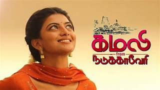

Kamali From Nadukkaveri is a 2021 Indian Tamil language drama film written and directed by Rajasekar Duraisamy on his directorial debut.[1] The film stars Anandhi, Rohit Saraf and Prathap Pothen. The film had its theatrical release on 19 February 2021 and opened to positive reviews from critics.
